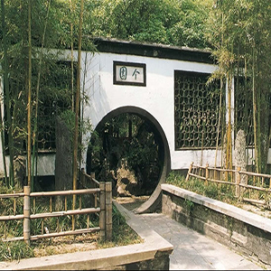

汉服
汉服，全称是“汉民族传统服饰”，又称汉衣冠、汉装、华服，汉服定型于周朝，传承于秦朝。 汉代衣冠直接继承自秦朝，如汉蔡邕《独断》卷下：“天子常服，汉服受之秦”。汉朝形成完备的冠服体系。 汉服采用幅宽二尺二寸（50cm左右）的布帛剪裁而成，且分为领、襟、衽、衿、裾、袖、袂、带、韨等十部分。交领右衽
褒衣广袖
汉服自古礼服褒衣博带、常服短衣宽袖。汉服的袖子又称“袂”，其造型在整个世界民族服装史中都是比较独特的。
“袖宽且长”是汉服礼服袖型的主要特点，但不是唯一的款式特点，汉服的小袖、短袖也比较多见。
系带隐扣
汉服中的隐扣，其实包括有扣和无扣两种情况。一般情况下，汉服是不用扣子的，即使有用扣子的，也是把扣子隐藏起来，而不显露在外面。
另外一种是腰间的大带和长带子，它不仅有实用性，而且有装饰性，另外还有象征性意义，象征着权力。
汉服的大带与和服相比，和服的更宽。
诗词
诗词，是指以古体诗、近体诗和格律词为代表的中国古代传统诗歌。亦是汉字文化圈的特色之一。通常认为，诗较为适合"言志"，而词则更为适合"抒情"。 诗词是阐述心灵的文学艺术，而诗人、词人则需要掌握成熟的艺术技巧，并按照严格韵律要求，用凝练的语言、绵密的章法、充沛的情感以及丰富的意象来高度集中地表现社会生活和人类精神世界。 中国诗起源于先秦，鼎盛于唐代。
中国词起源于隋唐，流行于宋代。中华诗词源自民间，其实是一种草根文学。在21世纪的中国，诗词仍然深受普通大众青睐。
将进酒
〖唐〗李白君不见，黄河之水天上来，奔流到海不复回。
君不见，高堂明镜悲白发，朝如青丝暮成雪。
人生得意须尽欢，莫使金樽空对月。
天生我材必有用，千金散尽还复来。
烹羊宰牛且为乐，会须一饮三百杯。
岑夫子，丹丘生，将进酒，杯莫停。
与君歌一曲，请君为我倾耳听。
钟鼓馔玉不足贵，但愿长醉不复醒。
古来圣贤皆寂寞，惟有饮者留其名。
陈王昔时宴平乐，斗酒十千恣欢谑。
主人何为言少钱，径须沽取对君酌。
五花马，千金裘，呼儿将出换美酒，与尔同销万古愁。
水调歌头.明月几时有
〖宋〗苏轼丙辰中秋，欢饮达旦，大醉，作此篇，兼怀子由。
明月几时有？把酒问青天。
不知天上宫阙，今夕是何年。
我欲乘风归去，又恐琼楼玉宇，高处不胜寒。
起舞弄清影，何似在人间！
转朱阁，低绮户，照无眠。
不应有恨，何事长向别时圆？
人有悲欢离合，月有阴晴圆缺，此事古难全。
但愿人长久，千里共婵娟。
国画
国画，又称“中国画”，古时称为丹青，我国传统绘画（区别于“西洋画”）。主要指以毛笔、墨、国画颜料等画在绢、宣纸、帛上并加以装裱的卷轴画。题材可分人物、山水、花鸟等，技法可分工笔和写意，它的精神内核是“笔墨”。 国画强调“外师造化，中得心源”，要求“意存笔先，画尽意在”，强调融化物我，创制意境，达到以形写神，形神兼备，气韵生动。其重神似不重形似，重意境不重场景的一种画。 中国画，按绘画技法分类： 写实国画、写意国画、工笔画、抽象国画、内画等。南宋李唐<<长夏江寺图>>
诸子百家
诸子百家是对春秋、战国、秦汉时期各种学术派别的总称，据《汉书·艺文志》的记载，数得上名字的一共有189家，4324篇著作。 其后的《隋书·经籍志》《四库全书总目》等书则记载“诸子百家”实有上千家。但流传较广、影响较大、最为著名的不过几十家而已。 归纳而言只有12家被发展成学派。
法家
法家是中国历史上提倡以法制为核心思想的重要学派，以富国强兵为己任，
《汉书·艺文志》列为“九流”之一。法家不是纯粹的理论家，而是积极入世的
行动派，它的思想也是着眼于法律的实际效用。[1] 法家思想包括伦理思想、
社会发展思想、政治思想以及法治思想等诸多方面。法家伦理思想。
法家伦理思想指的是建立在人性观基础上的诚信观和义利观，被古代大家和
近代学者认为其为道家分支。
道家
春秋时期，老子[1] 集古圣先贤之大智慧。
总结了古老的道家思想的精华，形成了道家完成系统的理论，标志着
道家思想已经正式成型。对中华哲学、文学、科技、艺术、音乐、养生、
宗教等等影响深远。
墨家
墨家是中国东周时期的哲学派别，诸子百家之一，
与孔子所代表的儒家、老子所代表的道家共同构成了中国古代三大哲学体系，
墨家被古代大家认为道家的分支，深受道家影响。法家代表韩非子称其和儒
家为“世之显学”，而儒家代表孟子也曾说“天下之言，不归杨（杨朱，
道家代表人物）则归墨（墨子）”等语，证明了墨家思想曾经在中国的辉煌。
杨墨本是硬币的两个面，故杨墨互补，然古往今来人们都以孟子“距杨墨”的
一般思维方式评价杨墨，这是有失公允的。
儒家
儒家是孔子所创立、孟子所发展、荀子所集其大成，
之后延绵不断，至今仍有一定生命力的学术流派。
儒家原先是先秦诸子百家之一，其创始人是孔子。儒家在先秦时期和诸子百家
地位平等，秦始皇"焚书坑儒"后，使儒家受到重创。而后[1] 汉武帝为了
维护封建专制统治，听从董仲舒"罢黜百家，独尊儒术"的建议，对思想实施钳
制，使儒家重新兴起。
“儒学”、“儒家”、“儒教”这些概念要分清。儒学作为一种学说，儒家作为一个阶层，儒教作为一种信仰，三者需要区分开来。
阴阳家
阴阳家是盛行于战国末期到汉初的一种哲学流派，
齐国人邹衍是其创始人，阴阳家的学问被称为“阴阳说”，其核心内容是“阴阳
五行”，阴阳学说是中华民族最重要的哲学思维之一。司马迁在《史记》中称
阴阳家的学问“深观阴阳消息，而作迂怪之变。”《吕氏春秋》、《淮南子》、
《春秋繁露》则直接受到邹衍学说的影响。古代大家与近代学者都认为阴阳
家源于道家，属于道家支派，近代出土竹简《三十时》等证实早期阴阳家著作
其中有大量道家色彩[1] 。值得注意的是《周易》没有提出阴阳与太极等概
念，讲阴阳与太极的是被道家与阴阳家所影响的《易传》。
名家
名家以辩论名实等思辨问题为中心，并且以善辩成名的
一个学派，又称“辩者”、“刑（形）名家”。按：“名”就是指称事物的名称，
用今话说，就是“概念”；“实”就是“名”所指称的事物。
杂家
杂家，中国战国末至汉初的哲学学派。以博采各家之说
见长。以“兼儒墨，合名法”为特点，“于百家之道无不贯通”。《汉书·艺文志》
将其列为“九流”之一。杂家的出现是统一的封建国家建立过程中思想文化融合
的结果。杂家著作以战国《尸子》、秦代《吕氏春秋》、西汉《淮南子》为代
表，分别为战国时期商鞅门客尸佼秦相吕不韦和汉淮南王刘安招集门客所集，
对诸子百家兼收并蓄，但略显庞杂。又因杂家著作皆以道家思想为主，故有
人认为杂家实为新道家学派。
农家
农家，又称“农家流”，是先秦时期反映农业生产和农民
思想的学术流派，奉神农为祖师，祖述神农，主张劝耕桑，以足衣食。”由于
儒家轻商农汉朝中期以后农家迅速衰落。《汉书·艺文志》列为“九流”之一。
小说家
小说家 ，诸子百家的其中一家，其书多已亡佚。
据班固所著《汉书．艺文志》曰：“小说家者流，盖出于稗官；街谈巷语，
道听途说者之所造也。”，意即小说家所做的事以记录民间街谈巷语，并呈
报上级等为主，然而小说家虽然自成一家，但被视为不入流者，故有“九流十
家”之说。
纵横家
纵横家，《汉书·艺文志》列为“九流”之一。后因称凭
辩才进行政治活动者为“纵横家”。 [1]
纵横即合纵连横。他们朝秦暮楚，事无定主，反复无常，设第划谋多以国家
政治需要出发。合纵派的主要代表是苏秦，连横派的主要代表是张仪。 出自
《资治通鉴·周显王三十六年》“ 张仪者， 魏人，与苏秦俱事鬼谷先生 ”。
兵家
兵家是中国先秦、汉初研究军事理论，从事军事活动的
学派，是中国古代军事思想的精华。诸子百家之一。关于兵家的起源，有
人认为兵家源于九天玄女，有人认为兵家鼻祖是吕尚，有人认为兵家源自
道家，也有人认为兵家源自法家。据《汉书·艺文志》记载，兵家又分为兵权
谋家、兵形势家、兵阴阳家和兵技巧家四类。兵家的代表人物有春秋时孙武、
司马穰苴，战国时孙膑、吴起、尉缭、赵奢、白起，汉初张良、韩信等。今
有兵家著作《孙子兵法》、《孙膑兵法》、《吴子》、《六韬》、《尉缭子》、
《握奇经》等。兵家著作中含有丰富的朴素唯物论和辩证法思想。
医家
中国医学理论的形成，是在公元前五世纪下半叶到公元
三世纪中叶，共经历了七百多年。公元前五世纪下半叶，中国开始进入封建社
会。从奴隶社会向封建社会过渡，到封建制度确立，在中国历史上是一个大
动荡的时期。社会制度的变革，促进了经济的发展，意识型态、科学文化领域
出现了新的形势，其中包括医学的发展。医家泛指所有从医的人。
名家简史
中国历史上有许多名人雅士。他们曾经雄才伟略；他们曾经金戈铁马；他们曾经谈笑风生；他们曾经对酒当歌；他们曾经哭，他们曾经笑…… 滚滚长江东逝水，浪花淘尽英雄。是非成败转头空。青山依旧在，几度夕阳红。白发渔樵江渚上，惯看秋月春风。一壶浊酒喜相逢。 古今多少事，都付笑谈中。
姜子牙
姜子牙（约前1156年—约前1017年），姜姓，吕氏，名尚，一名望，字子牙，或单呼牙，也称吕尚，别号飞熊。
 孔子
孔子（公元前551年9月28日―公元前479年4月11日），子姓，孔氏，名丘，字仲尼，中国著名的大思想家、大教育家、政治家。孔子开创了私人讲学的风气，是儒家学派的创始人。
孔子
孔子（公元前551年9月28日―公元前479年4月11日），子姓，孔氏，名丘，字仲尼，中国著名的大思想家、大教育家、政治家。孔子开创了私人讲学的风气，是儒家学派的创始人。
扁鹊
扁鹊(公元前407—前310年)姬姓，秦氏，名缓，字越人，又号卢医，春秋战国时期名医。
 汉武帝刘彻
汉武帝刘彻（公元前156年7月14日－公元前87年3月29日），西汉第七位皇帝，杰出的政治家、战略家、诗人。
汉武帝刘彻
汉武帝刘彻（公元前156年7月14日－公元前87年3月29日），西汉第七位皇帝，杰出的政治家、战略家、诗人。
 班超
班超（32年—102年），字仲升，扶风郡平陵县（今陕西咸阳东北）人。东汉时期著名军事家、外交家。
班超
班超（32年—102年），字仲升，扶风郡平陵县（今陕西咸阳东北）人。东汉时期著名军事家、外交家。
诸葛亮
诸葛亮（181年－234年10月8日），字孔明，号卧龙，汉族，徐州琅琊阳都（今山东临沂市沂南县）人，三国时期蜀汉丞相，杰出的政治家、军事家、散文家、书法家、发明家。
桂宫柏寝
未央宫
未央宫是西汉帝国的大朝正殿，建于汉高祖七年(前200年)，由刘邦重臣萧何监造，在秦章台的基础上修建而成 ，位于汉长安城地势最高的西南角龙首原上，因在长安城安门大街之西，又称西宫。
长乐宫
长乐宫，是中国西汉时期的宫殿，位于汉长安城南隅，周长约一万米，城墙厚度约有二十米，总面积达六平方公里，相当于汉长安城的六分之一。
含凉殿
含凉殿是唐代长安大明宫太液池南岸的一组宫殿建筑，宫殿依水而建，夏天凉爽宜人。

大明宫
大明宫，大唐帝国的大朝正殿，唐朝的政治中心和国家象征，位于唐京师长安(今西安)北侧的龙首原。始建于唐太宗贞观八年(634年)，原名永安宫，是唐长安城三座主要宫殿"三大内"(大明宫、太极宫、兴庆宫)中规模最大的一座，称为"东内"。
蓬莱宫
蓬莱宫，唐宫名。在陕西省西安市北龙首原上。原名大明宫，高宗时改为蓬莱宫。唐杜甫《莫相疑行》:"忆献三赋蓬莱宫，自怪一日声烜赫。"
太极宫
太极宫位于长安城中轴线北部，始建于隋文帝开皇二年(582年)，隋称大兴宫，唐睿宗景云元年(710年)改称太极宫。因其为唐帝国的正宫，故又称"大内"，唐高宗修大明宫后改称"西内"。
-
万里长城
- 万里长城
- 万里长城是中国古代一项伟大的防御工程，是中国也是世界上修建时间最长、工程量最大的一项古代防御工程。
-
桂林山水
- 桂林山水
- 广西壮族自治区的桂林市是世界著名的风景游览城市和历史文化名城，享有山水甲天下之美誉
-
杭州西湖
- 杭州西湖
- 杭州西湖位于浙江省杭州市西部， 杭州市市中心，旧称武林水、钱塘湖、西子湖，宋代始称西湖
-
北京故宫
- 北京故宫
- 北京故宫是明清两代的皇宫，又称紫禁城。历代宫殿都“象天立宫”以表示君权“受命于天”。由于君为天子，天子的宫殿如同天帝居住的“紫宫”禁地，故名紫禁城。
-
苏州园林
- 
- 苏州园林
- 苏州园林又称"苏州古典园林"，世界文化遗产，国家AAAAA级旅游景区，中国十大风景名胜之一，素有"园林之城"，享有"江南园林甲天下，苏州园林甲江南"之美誉.
-
安徽黄山
- 安徽黄山
- 黄山风景区（Huangshan Mountain）是中国著名风景区之一，世界游览胜地，位于安徽省南部黄山市。主峰莲花峰，海拔1864.7米。